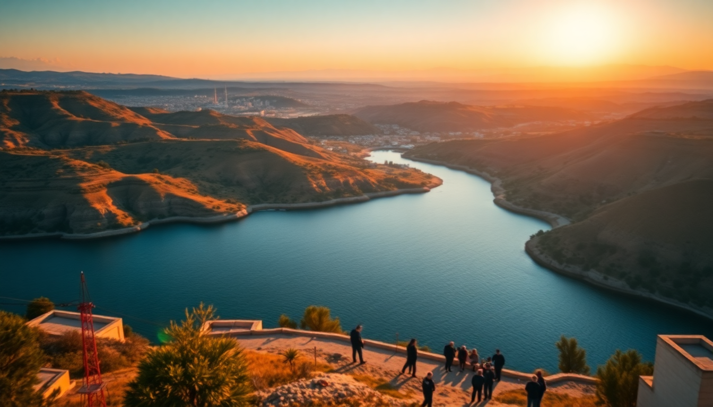

10-Day Turkey Itinerary: Istanbul, Cappadocia & Antalya

I just got back from 10 days in Turkey, and I’m writing this while my feet still hurt from all the cobblestones. This route—Istanbul, Cappadocia, Antalya, Pamukkale, Ephesus—is the classic loop, but I’ll tell you exactly what worked, what didn’t, and where I’d skip the queue. No fluff, just the plan I’d use again.
What’s the smartest way to split 10 days across these cities?
You need to move fast but not frantic. I flew between cities—domestic flights are cheap and save whole days. Here’s the exact split I used:
- Day 1–3: Istanbul — Sultanahmet and Beyoğlu. Don’t try to see everything.
- Day 4–5: Cappadocia — Göreme and Uçhisar. Two nights is tight but doable.
- Day 6: Antalya — Fly in, hit Kaleiçi and the marina.
- Day 7: Pamukkale — Day trip from Antalya or a stopover. I did it as a long day.
- Day 8–9: Ephesus (Selçuk) — Overnight in Selçuk, then fly home from İzmir.
- Day 10: Fly out — Buffer day.
Book your flights on Turkish Airlines or Pegasus Airlines early—I paid $40 for Istanbul to Kayseri, but last-minute it jumps to $100+.
Which neighborhoods in Istanbul save you time and money?
I stayed in Sultanahmet for two nights and regretted it—too touristy and overpriced. My second night I moved to Karaköy, and that was the right call. Here’s what I’d do differently:
- Stay in Karaköy or Galata — Better food, real bars, tram to Sultanahmet in 15 minutes.
- Hotel Ibrahim Pasha in Sultanahmet has a roof terrace with a direct view of the Blue Mosque. Worth the splurge for one night.
- Avoid Taksim Square hotels — Loud, crowded, and the taxi mafia there will try to charge you 200 lira for a 50-lira ride.
- Eat at Çiğdem Pastanesi in Karaköy for breakfast—baklava and borek that ruin you for all future pastries.
For the main sights, buy a Museum Pass Istanbul (525 lira) if you’re doing Hagia Sophia, Topkapi, and the Basilica Cistern. It paid for itself by day two.
Is the Cappadocia hot air balloon worth the hype—and the price?
Yes, but only if you book with a reputable operator. I used Royal Balloon and paid €180 per person. Cheaper operators pack 28 people into a basket; Royal keeps it to 16. The sunrise flight over Göreme is genuinely surreal—floating above fairy chimneys while the valley glows orange.
But here’s the catch: flights get cancelled 60% of the time in spring due to wind. I had a backup plan:
- Book two mornings — I scheduled for Day 4 and Day 5. First one cancelled, second flew.
- Stay in a cave hotel — We slept at Museum Hotel in Uçhisar. It’s expensive (€300/night), but the terrace overlooks the entire valley. If that’s too steep, Traveller’s Cave Hotel in Göreme is solid for €80.
- Skip the Green Tour — The Red Tour covers Uçhisar Castle, Göreme Open Air Museum, and Pasabag. Green is long bus rides to underground cities that feel like a tourist trap.
How do I handle the long drive from Cappadocia to Antalya?
Don’t drive it. It’s 8 hours of winding mountain roads with aggressive minibus drivers. I flew from Nevşehir Airport (NAV) to Antalya Airport (AYT) on Pegasus for $50. The flight is 1 hour 15 minutes.
Once in Antalya, stay in Kaleiçi (the old town). I checked into Tuvana Hotel—a converted Ottoman mansion with a courtyard pool. Walking distance to Hadrian’s Gate and the marina.
- Do the Düden Waterfalls — 30 minutes from town, free entry, and you can walk behind the falls.
- Skip the Antalya Museum unless you’re a history buff. It’s well-curated but takes 3 hours.
- Eat at 7 Mehmet — A local institution. Get the şakşuka and lamb tandır. Reserve ahead.
Can I do Pamukkale as a day trip from Antalya?
Yes, but it’s a long day—3 hours each way by rental car or bus. I rented a car from Avis at Antalya Airport for €40/day. The drive is straight, mostly highway.
- Arrive by 8 AM — The travertine terraces get packed by 10 AM. I walked barefoot up the white cliffs at 7:30 AM and had the place to myself.
- Hierapolis ruins are worth 90 minutes — The ancient theater and necropolis are impressive, but the museum is skippable.
- Don’t swim in Cleopatra’s Pool — It’s €15 to float in a crowded colonnaded pool with screaming kids. Just walk the travertines and leave.
- Lunch at Çamlık Restaurant — Just outside the south gate. Cheap gözleme and fresh ayran.
Drive back to Antalya or, if you’re efficient, continue to Selçuk for Ephesus the next day. I did the latter—it’s 2.5 hours from Pamukkale to Selçuk.
What’s the best way to see Ephesus without the cruise-ship crowds?
Ephesus is a zoo from 10 AM to 2 PM when the cruise ships dock at Kuşadası. I stayed overnight in Selçuk and walked to the site at 8 AM. The ticket office opens at 8:00, and I was inside by 8:15.
- Stay at Ayasoluk Boutique Hotel — In the old town, 10 minutes walk to the site. Rooftop breakfast with views of the Basilica of St. John.
- Hire a guide at the gate — Official guides charge €40 for 90 minutes. Worth it for the Library of Celsus and Terrace Houses context.
- Don’t skip the Terrace Houses — Extra ticket (€15), but you see intact frescoes and mosaics. Most tour groups skip it because it’s tight inside.
- Eat at Şirince village — 15 minutes drive from Selçuk. A wine-tasting stop with fruit wines (try the blackberry). Şirince Köy Evi does a good set menu for €10.
FAQ
Is 10 days enough for this route? It’s tight but doable if you fly between cities. I’d skip Antalya if you have only 9 days—add that night to Cappadocia instead. The flights and early starts are non-negotiable.
Do I need a visa for Turkey? US, UK, and EU citizens need an e-Visa. Apply at evisa.gov.tr. It costs $50 and takes 5 minutes. Print it—they ask at check-in for Turkish Airlines.
What’s the best time of year for this itinerary? April–May or September–October. I went in early May—20°C in Istanbul, 25°C in Antalya, and no rain. July and August are brutally hot in Ephesus and Pamukkale (40°C+). Winter flights get cancelled in Cappadocia.
Conclusion
- Fly between cities — Domestic flights on Pegasus or Turkish Airlines save two full days of driving.
- Stay in Karaköy (Istanbul) and Uçhisar (Cappadocia) — Better value and fewer crowds than the obvious choices.
- Hit Pamukkale and Ephesus at opening time — 8 AM or earlier. You’ll have the sites to yourself.
- Book the balloon for two mornings — Cancellations are common. Royal Balloon is worth the premium.
- Eat local — Çiğdem Pastanesi, 7 Mehmet, and Şirince village meals were my top three food memories.